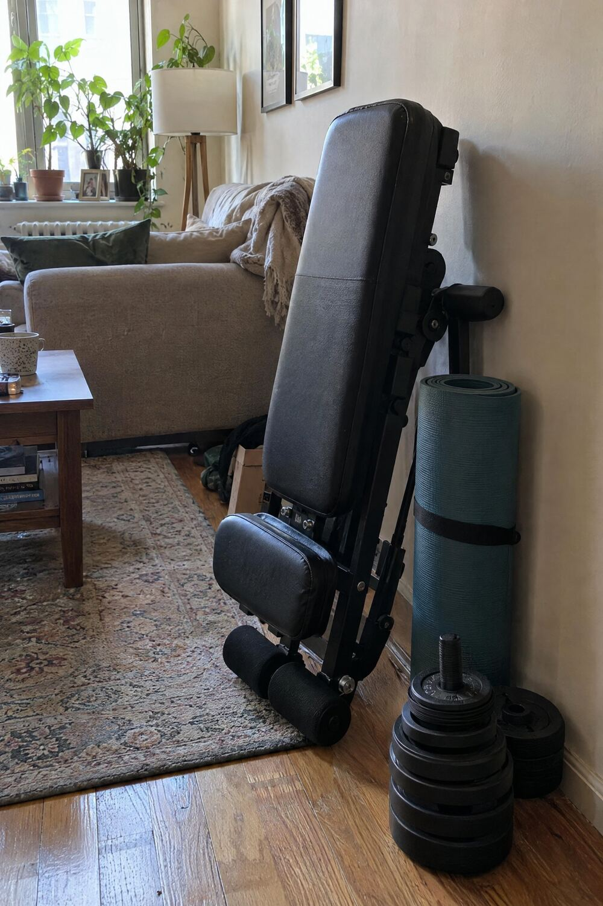
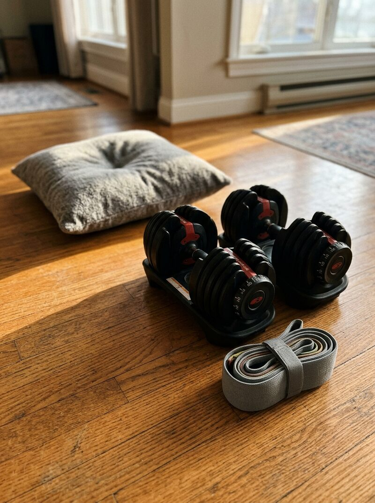
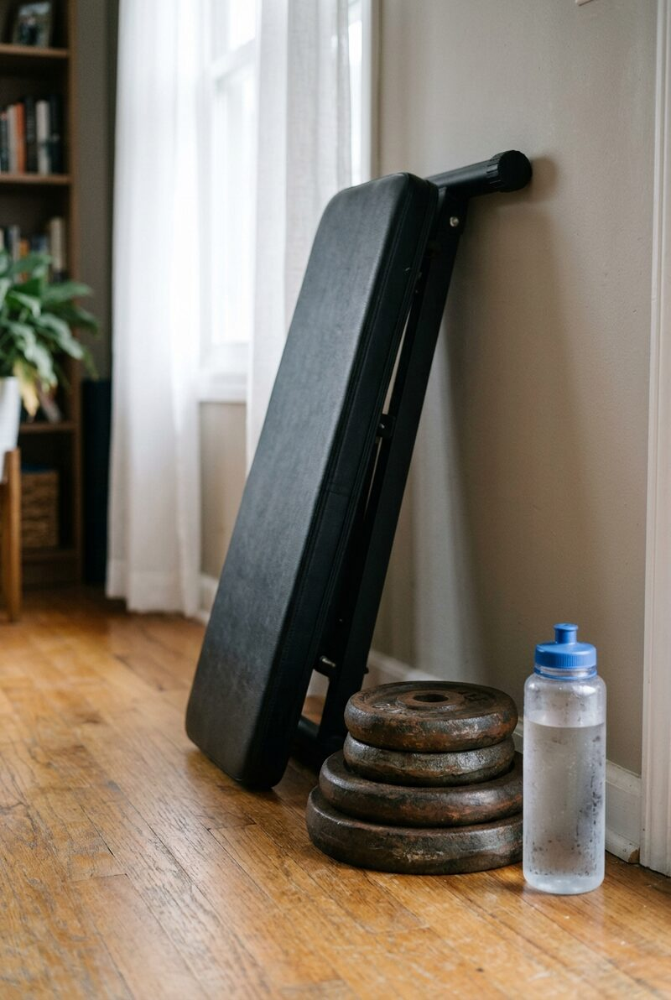
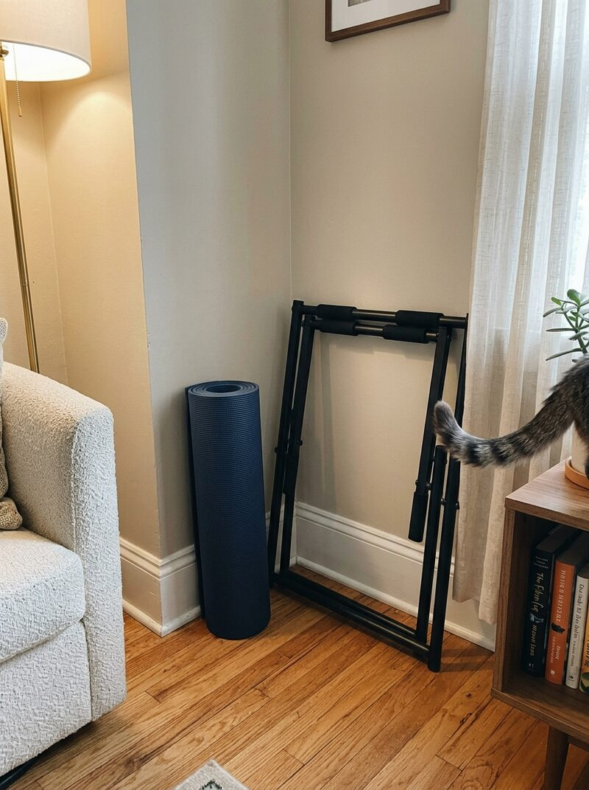
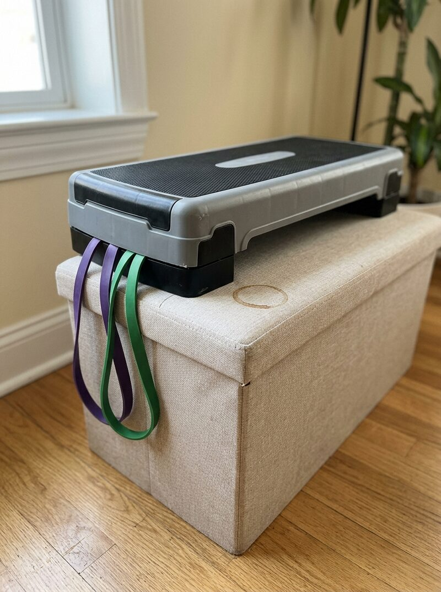
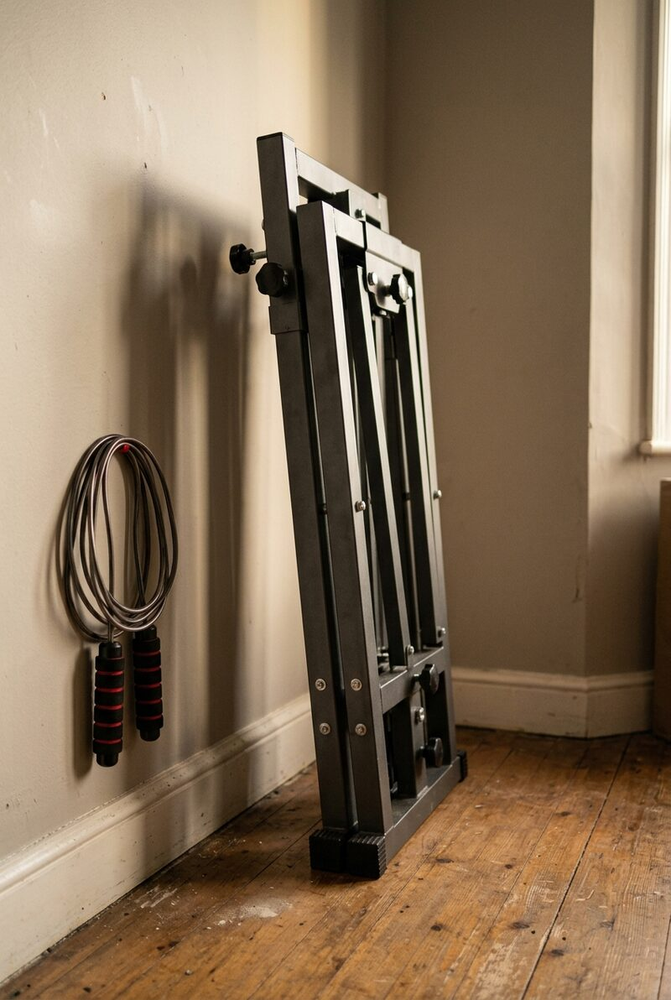
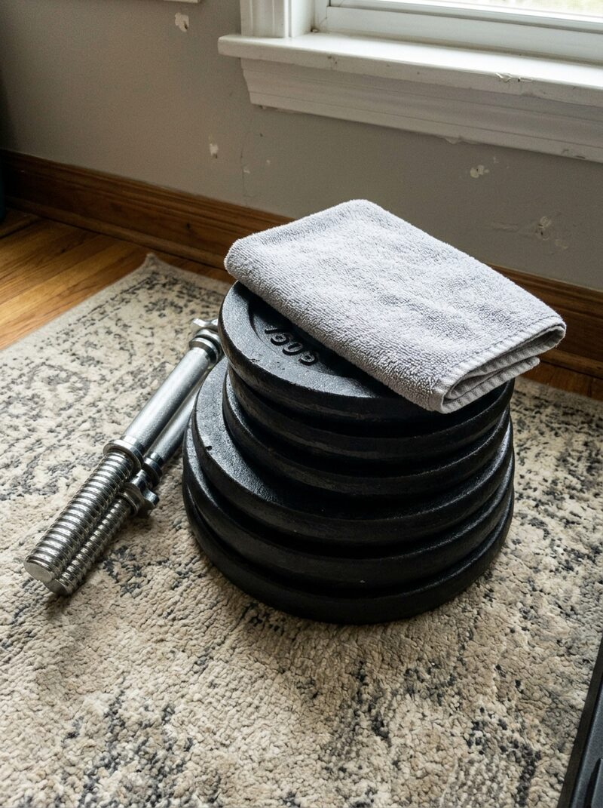
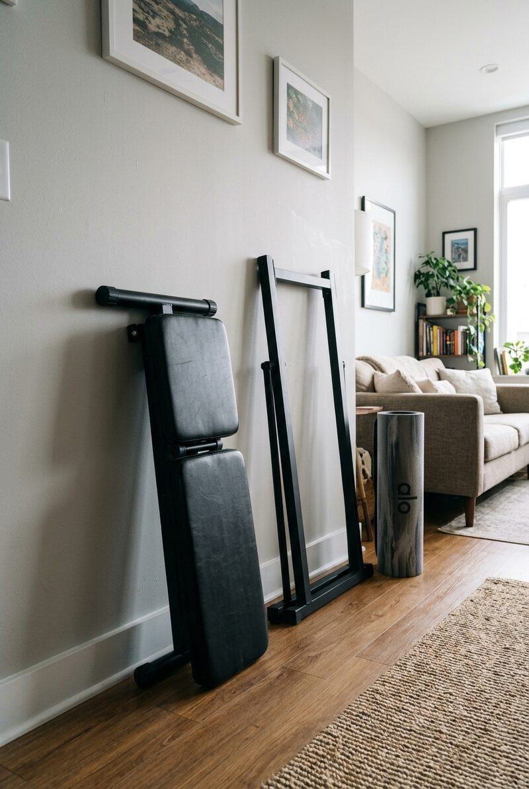
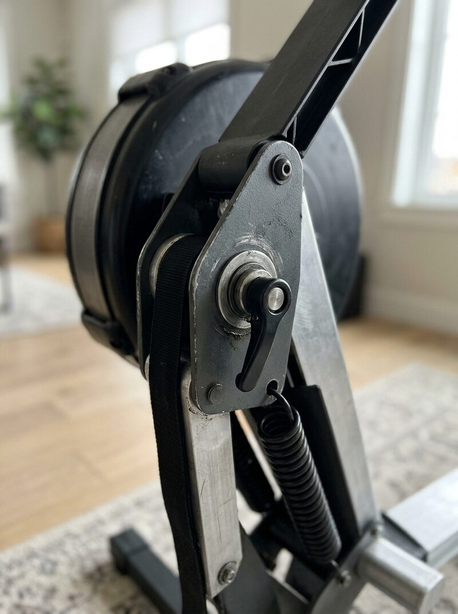
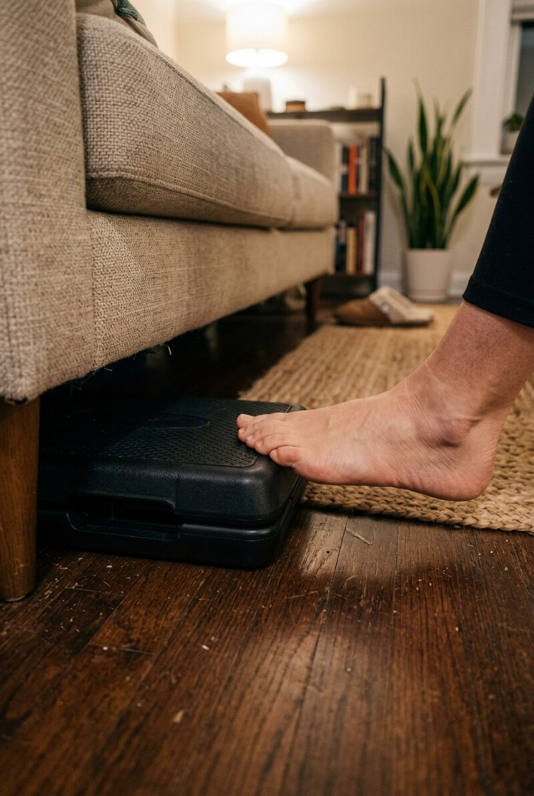

A full-size bench probably sounds like a non-starter in your one-bedroom — until it folds down to a few inches and leans against the wall like a spare chair. We judge everything here by its folded footprint as much as its workout, because that's what actually decides whether you'll keep using it.

Adjustable dumbbells that dial to any weight replace a full rack — the single highest space-to-function trade in this whole category.

A folded bench leaning against the wall next to a stack of plates — compact until it's actually time to use it.

A rolled mat and a folded frame tucked into a living room corner, out of the way of everything — including the cat.

A step platform stacked on a storage ottoman turns one piece of furniture into two uses at once.

A folding squat rack collapsed to its narrowest width leans quietly in a corner, barely wider than a chair.

Adjustable dumbbells and a folded band set — the whole kit, nothing taking up permanent space.

A folded bench, a folded rack, and a rolled mat lined up against one wall — a full setup collapsed into a few feet of space.

The hinge mechanism is what actually decides if a piece of equipment is worth the floor space — this is the kind that folds down to almost nothing.

Foldable gear that's genuinely compact doesn't need a storage plan — it just gets nudged under the couch between sessions.